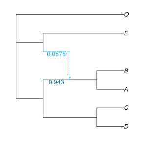
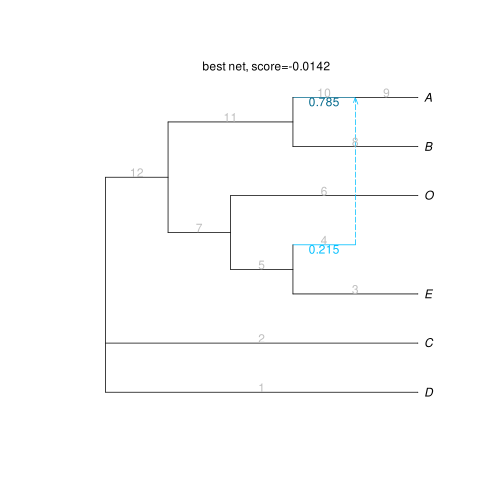
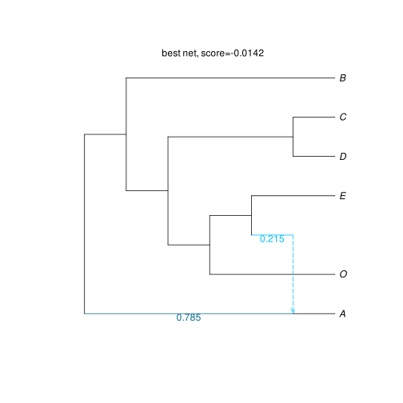

Candidate networks
Optimizing parameters for a given network
For a given network topology, we can optimize the branch lengths and inheritance probabilities (γ) with the composite log-likelihood. This is useful if we have a few candidate networks to compare. Each network can be optimized individually, and the network with the best composite log-likelihood can be chosen.
The score being optimized is the composite log-likelihood (the higher, the better).
Following our example in Estimating a network, we can optimize parameters on the true network (the one originally used to simulate the data). Given a table of CFs and a network, the function fitnumericalparameters! returns the same network topology but with optimized branch lengths and inheritance values:
julia> truenet = readnewick("((((D:0.4,C:0.4):4.8,((A:0.8,B:0.8):2.2)#H1:2.2::0.7):4.0,(#H1:0::0.3,E:3.0):6.2):2.0,O:11.2);");julia> optnet = deepcopy(truenet);julia> fitnumericalparameters!(optnet, raxmlCF);julia> writenewick(optnet, round=true)"(((D:0.4,C:0.4):25.0,((A:0.8,B:0.8):0.4)#H1:1.19::0.943):0.455,(#H1:25.0::0.057,E:3.0):2.915,O:13.2);"julia> loglik(optnet) # composite log-likelihood: the higher, the better-0.26801715077736177
using PhyloPlots, RCall
R"par"(mar=[0,0,0,0])
plot(optnet, showgamma=true);
We get a score of -0.01420, which is comparable to the score of the SNaQ network (net1: -0.01421), especially compared to the score of the best tree (net0: -0.2836). This begs the question: is the true network within the "range" of uncertainty? We can run a Bootstrap analysis to measure uncertainty in our network inference.
For a more thorough optimization, we could change the arguments for the tolerances (ftolRel and xtolAbs) used to determine when the parameters are optimized and the search stops (but the optimization will take longer). It makes no difference on this small data set.
net1par = fitnumericalparameters!(truenet, raxmlCF, ftolRel=1e-10, xtolAbs=1e-10)Network score with no optimization
Network score with no optimization
For a network with given branch lengths and γ inheritance probabilities, we can compute the composite log-likelihood with:
julia> computeSNaQscore!(truenet, raxmlCF) # composite log-likelihood: the higher, the better-3.1172976845901292
This function is not maximizing the composite log-likelihood, it is simply computing the composite log-likelihood for the given branch lengths and probabilities of inheritance.
Candidate networks compatible with a known outgroup
If the network was estimated via snaq!, it might turn out to be impossible to root our estimated network with a known outgroup. At this time, snaq! does not impose any rooting constraint on the network: the search for the lowest score considers all networks in the specified search space, excluding those that are incompatible with the specified outgroup (if there is one). (The monophyly of outgroups is not imposed either, like in many other methods.)
If the estimated network cannot be rooted with the known outgroup, we can check the .networks output file for a possible alternative network. It has a list of networks that are slight modifications of the best network, where the modifications changed the direction of one reticulation at a time. For each modified network, the score was calculated. So if we find in this list a modified network that has a score close to that of the best network, and that can be re-rooted with our known root position, then this modified network is a better candidate than the network with the best score.
Below is what the net1.networks file looks like, after performing the analysis in the section Network estimation. Scroll to the right to see the scores.
(D:0.0,C:0.0,(((E:0.0,#H1:9.773328660620532::0.2153933893852204):0.5634560541958061,O:0.0):0.5148518949768833,(B:0.0,(A:9.773328660620532)#H1:1.0e-5::0.7846066106147795):18.177763138689265):19.156523950571202);, with loglik -0.0142092522636232 (best network found, remaining sorted by log-pseudolik; the smaller, the better)
(D:0.0,C:0.0,(((E:0.0,#H1:1.0e-5::0.21539327901801508):0.5634566904807472,O:0.0):0.514851894466229,(B:0.0,(A:0.0)#H1:1.0e-5::0.7846067209819849):15.44919944017283):19.546777983584125);, with loglik -0.01420928235241607
(D:0.0,C:0.0,((B:0.0,(A:0.0)#H1:1.0e-5::0.7846116222456221):11.697714718055341,(O:0.0,(E:0.0,#H1:1.0e-5::0.21538837775437789):0.563485103100604):0.5148518944086256):19.546663186534115);, with loglik -0.014210831571692534
(D:0.0,C:0.0,((O:0.0,(E:0.0,#H1:0.08708052358306313::0.21538099427132573):0.5633492803411521):0.5148431848214704,(B:0.0,(A:0.0)#H1:1.0e-5::0.7846190057286743):11.048069985572374):19.5467444127772);, with loglik -0.014212286655858707
(D:0.0,C:0.0,((O:0.0,(E:0.0,#H1:1.0e-5::0.21550218066054921):0.5629165827327959):0.5149191428743732,(B:0.0,(A:0.0)#H1:1.0e-5::0.7844978193394507):8.714574371928515):19.546663736694907);, with loglik -0.014241110757615973
(D:0.0,C:0.0,((O:0.0,(E:0.0,#H1:1.0e-5::0.21550218065989887):0.5629165827412171):0.5149191428744571,(B:0.0,(A:0.0)#H1:1.0e-5::0.7844978193401011):8.714574371216708):19.54666373669491);, with loglik -0.01424111075763494
(D:0.0,C:0.0,((E:0.0,O:0.0):0.3752616316089667,(A:0.0,B:0.0):1.25739767575748):19.546660332896955);, with loglik -0.283591956494552
(D:0.0,C:0.0,((E:0.0,O:0.0):0.3752616321790141,(A:0.0,B:0.0):1.2573976776620968):19.546660278206648);, with loglik -0.283591956494552
(D:0.0,C:0.0,((E:0.0,O:0.0):0.3752616321790141,(A:0.0,B:0.0):1.2573976776620968):19.546660278206648);, with loglik -0.28359195649455204
(D:0.0,C:0.0,((E:0.0,O:0.0):0.37526163268090873,(A:0.0,B:0.0):1.2573976793390045):19.54666023005492);, with loglik -0.2835919564945531We can read this file and look at its list of networks like this:
julia> file = "net1.networks";julia> # or use the example file available with the package: file = joinpath(dirname(pathof(SNaQ)), "..","examples","net1.networks");julia> netlist = readmultinewick(file) # read the full list of networks in that file10-element Vector{HybridNetwork}: HybridNetwork, Rooted Network 12 edges 12 nodes: 6 tips, 1 hybrid nodes, 5 internal tree nodes. tip labels: D, C, E, O, ... (D:0.0,C:0.0,(((E:0.0,#H1:9.773::0.215):0.563,O:0.0):0.515,(B:0.0,(A:9.773)#H1:0.0::0.785):18.178):19.157); HybridNetwork, Rooted Network 12 edges 12 nodes: 6 tips, 1 hybrid nodes, 5 internal tree nodes. tip labels: D, C, E, O, ... (D:0.0,C:0.0,(((E:0.0,#H1:0.0::0.215):0.563,O:0.0):0.515,(B:0.0,(A:0.0)#H1:0.0::0.785):15.449):19.547); HybridNetwork, Rooted Network 12 edges 12 nodes: 6 tips, 1 hybrid nodes, 5 internal tree nodes. tip labels: D, C, B, A, ... (D:0.0,C:0.0,((B:0.0,(A:0.0)#H1:0.0::0.785):11.698,(O:0.0,(E:0.0,#H1:0.0::0.215):0.563):0.515):19.547); HybridNetwork, Rooted Network 12 edges 12 nodes: 6 tips, 1 hybrid nodes, 5 internal tree nodes. tip labels: D, C, O, E, ... (D:0.0,C:0.0,((O:0.0,(E:0.0,#H1:0.087::0.215):0.563):0.515,(B:0.0,(A:0.0)#H1:0.0::0.785):11.048):19.547); HybridNetwork, Rooted Network 12 edges 12 nodes: 6 tips, 1 hybrid nodes, 5 internal tree nodes. tip labels: D, C, O, E, ... (D:0.0,C:0.0,((O:0.0,(E:0.0,#H1:0.0::0.216):0.563):0.515,(B:0.0,(A:0.0)#H1:0.0::0.784):8.715):19.547); HybridNetwork, Rooted Network 12 edges 12 nodes: 6 tips, 1 hybrid nodes, 5 internal tree nodes. tip labels: D, C, O, E, ... (D:0.0,C:0.0,((O:0.0,(E:0.0,#H1:0.0::0.216):0.563):0.515,(B:0.0,(A:0.0)#H1:0.0::0.784):8.715):19.547); HybridNetwork, Rooted Network 9 edges 10 nodes: 6 tips, 0 hybrid nodes, 4 internal tree nodes. tip labels: D, C, E, O, ... (D:0.0,C:0.0,((E:0.0,O:0.0):0.375,(A:0.0,B:0.0):1.257):19.547); HybridNetwork, Rooted Network 9 edges 10 nodes: 6 tips, 0 hybrid nodes, 4 internal tree nodes. tip labels: D, C, E, O, ... (D:0.0,C:0.0,((E:0.0,O:0.0):0.375,(A:0.0,B:0.0):1.257):19.547); HybridNetwork, Rooted Network 9 edges 10 nodes: 6 tips, 0 hybrid nodes, 4 internal tree nodes. tip labels: D, C, E, O, ... (D:0.0,C:0.0,((E:0.0,O:0.0):0.375,(A:0.0,B:0.0):1.257):19.547); HybridNetwork, Rooted Network 9 edges 10 nodes: 6 tips, 0 hybrid nodes, 4 internal tree nodes. tip labels: D, C, E, O, ... (D:0.0,C:0.0,((E:0.0,O:0.0):0.375,(A:0.0,B:0.0):1.257):19.547);
Next, we would like to extract the network scores from the file. We can do this with the readallsnaqnetworks function.
julia> netlist = readallsnaqnetworks(file);julia> for i in eachindex(netlist) println("net $i has composite log-likelihood = ", round(loglik(netlist[i]), digits=4)) endnet 1 has composite log-likelihood = -0.0142 net 2 has composite log-likelihood = -0.0142 net 3 has composite log-likelihood = -0.0142 net 4 has composite log-likelihood = -0.0142 net 5 has composite log-likelihood = -0.0142 net 6 has composite log-likelihood = -0.0142 net 7 has composite log-likelihood = -0.2836 net 8 has composite log-likelihood = -0.2836 net 9 has composite log-likelihood = -0.2836 net 10 has composite log-likelihood = -0.2836
The first network in the list is the best network returned by snaq!. We see that multiple runs found this same network as well, but networks 7-10 have worse scores. The best network is shown below. We chose to show edge numbers, to use them later to re-root the network.
plot(netlist[1], showgamma=true, showedgenumber=true, tipoffset=0.1);
R"mtext"("best net, score=-0.0142", line=-1);
Now imagine that our outgroup is taxon A.
Best network: we would get a RootMismatch error if we tried to set the root on the external edge 9 to A, with rootatnode!(netlist[1], "A") (see the PhyloNetworks guide Does the root conflict with the direction of a reticulation?). But we could root the best network on the major parent edge to A, edge 10 (rooted network on the left below).
rootonedge!(netlist[1], 10); # root best net to make A outgroup
rotate!(netlist[1], -4); # to 'un-cross' edges
rotate!(netlist[1], -6);
rotate!(netlist[1], -5);
plot(netlist[1], showgamma=true, tipoffset=0.1);
R"mtext"("best net, score=-0.0142", line=-1);
For the second best network in our list, there are 2 ways to root it with A. These 2 options give quite different rooted versions of the network:
- On the external edge 8 to A (top right). This requires the existence of an unsampled taxon, sister to BDCOE, that would have contributed to introgression into an ancestor of E.
- On its parent edge 10 (bottom right).
A is an outgroup in both rootings, but the second option is more parsimonious, in the sense that it does not outright require the existence of a "ghost" taxon: a taxon that went extinct after the introgression, or that is unsampled.
This second rooted version is consistent with 2 possibilities. It could arise either from (a) an unsampled taxon sister to A that contributed to introgression, or (b) a direct ancestor of A could have contributed to the introgression into the ancestor of E. Case (a) stipulates the existence of an unsampled ("ghost") taxon, but case (b) does not require any unsampled taxon.
These two possibilities differ in the length of their gene flow edge (light blue, here with γ=0.185). If gene flow came from an unsampled taxon under case (a), this edge would have positive length, in calendar time. If gene flow came from a direct ancestor of A under case (b), the gene flow edge would have length 0.
Edge lengths from SNaQ should be interpreted with caution to distinguish between the two possibilities because:
- edge lengths estimated with SNaQ are in coalescent units instead of calendar time, and necessarily include estimation error;
- an edge with a true length of 0 may be estimated to have a non-zero length in coalescent units due to errors in estimated gene trees, to help explain gene tree discordance;
- an incorrect topology may result in edges of estimated length 0;
- and some edge lengths are not identifiable from quartet concordance factors anyway.
To distinguish between these possibilities, models that separate calendar time, substitution rate, and population size can be useful. Using stronger assumptions than SNaQ (e.g. a molecular clock), the rooted network and branch lengths may be identifiable, so networks with / without unsampled taxa may be distinguished. See for example Zhang et al. 2024, who used BPP. Note that the model named "MSci" in BPP is exactly the same as the network multispecies coalescent, and is typically named NMSC in most papers.